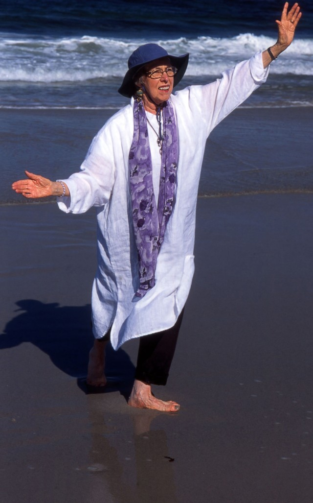

|
Michael Dylan Welch
Zane Parks
|
Kay F. Anderson, Life-Dancer
(by Michael Dylan Welch)
Those who met Kay Anderson couldn’t help but be changed by her
spirit of joy. I first met her in the early 1990s at a meeting of the
Haiku Poets of Northern California in San Francisco. When Christopher
Herold and I were editing the group’s journal Woodnotes, the first
poem we published by her, from issue #14 (Autumn, 1992), was this:
rainy day —
sharing my bread
with a peg-leg grackle
In 1993, I was drawn to take a class in sumi-e brush painting in
Redwood City. Much to my surprise, when I showed up at the first
class, there was Kay! She stuck with it and over the years many haiku
poets have seen her heartfelt work. At the time of the class, she
would have been nearly sixty years old, still learning, still eager
to try something new. Here’s a poem by Kay from Woodnotes #18
(Autumn, 1993):
first sumi-e lesson —
what I need
is the teacher’s brush
Kay was also my nearest haiku neighbour for many years. She and I
lived next to salt-water lagoons in Foster City and Redwood Shores,
towns right next to each other along San Francisco Bay. We’d
occasionally get together and share poems, and her poems were often
about the birds she saw from her back deck. Often her haiku expressed
a profound, selfless empathy (the following one winning second prize
in the 1996 Henderson Haiku Contest sponsored by the Haiku Society of
America):
deep silence
the orphaned nestlings
this third morning
Yet she wrote vividly about many other topics. I once shared the
following poem of Kay’s with a friend who had just been divorced. My
friend immediately wanted a copy for herself:
five years
in the wrong window:
the violet’s first bloom
When my wife and I moved north to Seattle, Kay and I kept in touch by
e-mail. She took particular delight in my becoming a new father and
enjoyed the stories I shared about my two young children. Her
positive outlook came, I believe, from an innate youthfulness, always
seeing the world as just beginning, as full of hope. She valued the
joy of youth, and encouraged me to savour it in my children. She said
my son and daughter had changed me, and she was right. And so had she
— for the same reasons. I like to think that something of her joy
made it into this poem of mine:
first star . . .
a seashell held
to my baby’s ear

The preceding picture is my favourite of Kay, taken in September of
2002 at the beach near the Asilomar conference center in Pacific
Grove, California, at the Yuki Teikei Haiku Society’s annual
retreat. What a sparkle in her eyes! Her ready smile and the twirl of
her arms expressed her joy at being alive — despite her diagnosis of
melanoma. I love how she wanted to be barefoot — not just at the beach
that early autumn day but in all of life, to not hold herself back
from life’s full experience. She was a life-dancer. This unguarded
moment on the beach is the way I want to remember her: ever and
always as a life-dancer. It was the last time I saw her. — Michael Dylan Welch
an upward glance
at geese on wing
a gap in the vee
— Zane Parks
|